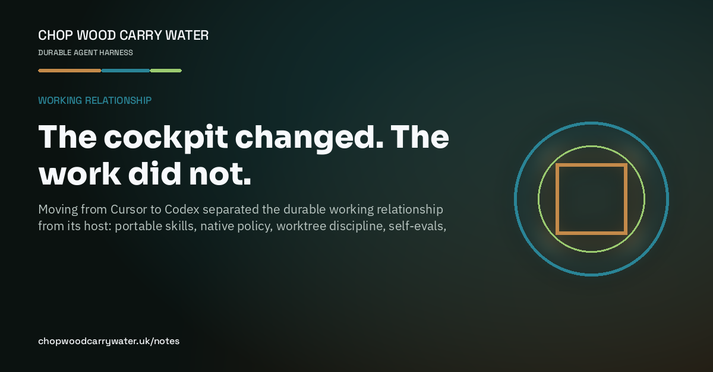

Working relationship · 5th September 2026
The cockpit changed. The work did not.
Moving from Cursor to Codex separated the durable working relationship from its host: portable skills, native policy, worktree discipline, self-evals, and proof.

At the end of August I moved my daily agent cockpit from Cursor to Codex. I expected a migration project. What I found was a test of the harness itself: if the useful behaviour lived only in one editor’s settings, it was not durable yet.
The procedures travelled well. Our skills already followed the open Agent Skills format, so we made one reviewed skill tree canonical and projected approved members into Codex. The projector fails closed on occupied destinations, drift, broken links and secret-shaped files. Codex supports symlinked skill folders; the host changed without creating a second hand-edited source of truth.
The policy plumbing did not travel as files. Cursor’s .mdc metadata and always-apply rules are Cursor mechanisms. Codex layers project guidance through AGENTS.md and keeps sandboxing and permissions in its own control plane. That forced a healthier separation: portable job procedure in skills, repository expectations in AGENTS.md, host enforcement in the host, and the consequential human decision at the real egress boundary.
Codex tasks and managed worktrees made parallel work visible and easier to isolate. They did not abolish coordination. One writer per tree, explicit ownership, scarce bench and runner capacity, and review load still decide whether parallelism helps. A new task is not memory either; decisions still need a versioned artefact or curated MemPalace record before context is summarized or disappears.
The interim work also made the harness more empirical. Harness Gauntlet now red-teams gates with a versioned corpus. Tool output is bounded after one task showed 17 oversized results accounting for 95% of 2.26 MB. Memory writes carry provenance and have to prove later retrieval. Embedded loops use fast layer, DTB and OTA iteration while full CI remains trust proof. Circuit breakers stop repeated tool-error thrash.
So the conclusion is not that Codex is magic, or that Cursor was a mistake. The cockpit got better for the way I now work, and the move exposed which parts were genuine standard work. Models and interfaces will change again. Keep the skills portable, the policy explicit, the memory retrievable and the proof close to the work. Then chop wood, carry water.